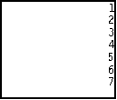

| HOME >> Tutorials >> Tutorial 10: More Loops |
Introduction:
In this tutorial, we will learn more about loops using While and Repeat. You use these two commands when you want a set of commands executed until a certain condition happens. While runs while the condition is true, and Repeat runs until the condition is true. The two commands are essentially the same.
New Commands:
| While | Performs a group of commands while condition is true |
| Repeat | Repeats a group of commands until condition is true |
| While condition | Repeat condition |
| commands (while condition is true) | commands (until condition is true) |
| End | End |
The Codes:
There are going to be two separate codes: one with While and another with Repeat.
| : | For AShell, SOS, and TI-Explorer |
| 1 |
Stores 1 into X |
| ClrHome | Clears the home screen |
| Lbl 1 | |
| While X<8 | Executes commands while X is less than 8 |
| Disp X | Displays X |
| X+1 |
Adds one to X and then re-stores it |
| End | End While Loop |
| Pause | Suspends program and waits for user to press |

After running the program, you should notice that program displays 1-7 on the right hand side of the screen. After the calculator displays "7", X is increased by 1 and now equals 8. The While loops only runs while X is less than 8. Once X is 8, then it executes the command after the End command, which is Pause. Next is an example on the use of Repeat.
| : | For AShell, SOS, and TI-Explorer |
| 1 |
Stores 1 into X |
| ClrHome | Clears the home screen |
| Lbl 1 | |
| Repeat X=8 | Executes commands while X is less than 8 |
| Disp X | Displays X |
| X+1 |
Adds one to X and then re-stores it |
| End | End While Loop |
| Pause | Suspends program and waits for user to press |
You should have figured out that this program does the exact same thing as the While loop program. The only difference (which doesn't appear on the screen) is that on the first time of encountering the Repeat loop, the calculator executes the commands and then tests the loop. This is all explained in the further definition of Repeat.
Conclusion:
You can really use these two commands interchangeably. I usually prefer to use the Repeat command because it makes more sense to me when I'm programming. The next tutorial will be the last tutorial (for v1.0) in which you'll be learning new commands. The tutorial after that is the compilation of all that we've learned and you'll have to make a guessing game.
If you do not understand a particular part in this lesson, have suggestions, or find any problems please contact me.
 |
 |
| Tutorial 9 | Tutorial 11 |